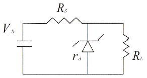
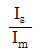
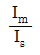
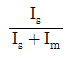
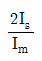
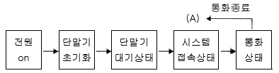
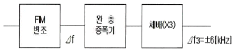

무선설비산업기사 (2011-05-29 기출문제)
1과목: 디지털 전자회로
1. C형과 L형 평활 회로의 특성을 비교하였다. 다음 중 콘덴서 입력형의 특성으로 맞는 것은?
- 직류 출력 전압이 낮다.
- 전압 변동율이 작다.
- 최대 역전압(PIV)이 높다.
- 시정수가 크며, 리플이 증가된다.
(정답률: 83%)

2. 그림의 정전압 회로에서 전압 안정도를 0.1로 할 때 저항 Rs의 값은? (단, Rd=10[Ω])

- 10[Ω]
- 100[Ω]
- 1[kΩ]
- 10[kΩ]
(정답률: 78%)
3. 가변 커패시터(Capacitor)로 사용되는 다이오드는?
- 건 다이오드
- 바랙터 다이오드
- 발광 다이오드
- 터널 다이오드
(정답률: 84%)
4. 전계효과 트랜지스터(FET)에 관한 설명으로 맞지 않는 것은?
- 입력저항이 높다.
- 접합형 입력저항은 MOS형보다 낮다.
- 저주파시 잡음이 적다.
- 소수캐리어에 의한 증폭작용을 한다.
(정답률: 74%)
5. 트랜지스터의 바이어스회로 방식 중에서 안정도가 가장 높은 것은?
- 고정 바이어스
- 전압궤환 바이어스
- 전류궤환 바이어스
- 전압전류궤환 바이어스
(정답률: 83%)
6. 트랜지스터의 전기적 특성을 나타내는 기호 중 출력단 전류증폭률을 나타내는 기호는?
- hfe
- hre
- hoe
- hie
(정답률: 76%)
7. 다음 증폭 방식 중 가장 효율이 좋은 것은 어느 것인가?
- A급
- B급
- C급
- AB급
(정답률: 89%)
8. 다음 중 저주파 발진회로로 적합한 것은?
- RC 발진기
- 수정 발진기
- 콜피츠 발진기
- 하틀리 발진기
(정답률: 82%)
9. 수정 발진기는 어떤 현상을 이용하는가?
- 피에조(Piezo) 현상
- 과도(Transient) 현상
- 지연(Delay) 현상
- 히스테리시스(Hysteresis) 현상
(정답률: 90%)
10. 다음 중 위상변조(PM)에 대한 설명으로 옳은 것은?
- 반송파의 진폭이 신호의 크기에 따라 비례한다.
- 반송파의 위상이 신호의 크기에 따라 비례한다.
- 반송파의 주파수가 신호의 크기에 따라 비례한다.
- 반송파의 주파수와 위상이 신호의 크기에 따라 비례한다.
(정답률: 82%)
11. 진폭 변조에서 변조도를 나타내는 것은? (단, Is는 신호파 진폭, Im은 반송파 진폭이다.)




(정답률: 73%)
12. 입력 파형은 그대로 유지하면서 파형의 평균 레벨을 변화시키는 회로로서 직류 재생 회로로 사용될 수 있는 회로는 다음 중 어느 것인가?
- clamping 회로
- clipping 회로
- limiter 회로
- slicer 회로
(정답률: 80%)
13. 정(_)으로 바이어스 된 리미터 회로와 부(-)로 바이어스 된 리미터 회로를 결합하여 입력신호의 일부분을 추출하는 회로를 무엇이라 하는가?
- 클리퍼
- 클램퍼
- 슬라이서
- 슈미트 트리거
(정답률: 78%)
14. 3초과 코드 0111의 10진수 값과 그레이 코드(gray code) 0111의 10진수 값을 각각 나열한 것은?
- 4, 5
- 5, 6
- 6, 7
- 7, 8
(정답률: 90%)
15. 다음 중 그레이 부호(Gray Code)를 바르게 설명한 것은 어느 것인가?
- 연산하는데 용이
- 인접 부호와 2비트가 동일
- 인접 부호와 1비트가 상이
- 가중치 부호
(정답률: 72%)
16. 다음 중 플립플롭 회로에 대한 설명으로 틀린 것은?
- 플립플롭의 종류로는 S-R, D, J-K 플립플롭 등이 있다.
- 플립플롭은 2개의 NOR 게이트로 구성할 수 있다.
- 플립플롭은 동기식 순서논리소자이다.
- 플립플롭은 2개의 NAND 게이트로 구성할 수 없다.
(정답률: 70%)
17. 링카운터에 대한 설명으로 틀린 것은?
- 시프트 카운터(Shift Counter)를 응용한 카운터이다.
- 8421 2진 카운터에 비해 효율적이다.
- 항상 첫 번째 플립플롭의 출력을 0으로, 나머지 플립플롭은 1이 되게 PRESET과 RESET을 걸어준다.
- 디코더(Decoder)가 별도로 필요하지 않다.
(정답률: 67%)
18. 플립플롭 6개를 이용하여 카운터를 만들려고 한다. 최대 몇 개의 펄스를 카운트할 수 있는가?
- 6
- 12
- 36
- 64
(정답률: 81%)
19. 디지털 IC의 정상 동작에 영향을 주지 않고 게이트 출력부에 연결할 수 있는 표준 부하의 숫자를 무엇이라고 하는가?
- 팬 아웃
- 틸트
- 잡음 허용치
- 전달 지연 시간
(정답률: 90%)
20. 2[MHz]의 정현파 발진기에서 1[MHz]의 디지털 클록 펄스를 얻기 위해 필요한 회로는 다음 중 어느 것인가?
- 슈미트트리거 회로와 T 플립플롭
- 미분 회로와 가산기
- 적분 회로와 감산기
- 슈미트트리거 회로와 미분 회로
(정답률: 73%)
2과목: 무선통신 기기
21. 수신시에 음량을 조정하기 위하여 사용되는 조정기는?
- 고주파 이득 조정기
- 마이크 이득 조정기
- 고주파 출력 조정기
- 저주파 이득 조정기
(정답률: 76%)
22. AM 수신기에 비해 SSB 수신기가 갖는 특성으로 잘못된 것은?
- 대역폭이 약 1/2이다.
- 국부 발진기의 높은 주파수 안정도가 요구된다.
- 충전 시정수가 짧고 방전 시정수가 긴 자동이득제어(AGC) 회로가 필요하다.
- 헤테로다인 검파를 수행할 수 없다.
(정답률: 81%)
23. 레이더에서 탐지 거리 결정 요인 중 관계가 가장 먼 것은?
- 안테나의 높이가 높을수록 멀리 탐지된다.
- 유효 반사 면적이 큰 목표일수록 멀리 탐지된다.
- 출력 및 수신 감도를 올리면 탐지 거리가 증대된다.
- 안테나의 이득이 큰 것을 사용하고 사용 파장을 길게 사용한다.
(정답률: 68%)
24. 다음 중 DSB 통신방식에 비해 SSB 통신방식의 장점으로 잘못된 것은?
- 송수신회로 구성이 비교적 간단하다.
- 적은 소비전력으로 통신이 가능하다.
- 선택성 Fading의 영향이 적다.
- 점유주파수대폭을 반으로 줄일 수 있다.
(정답률: 82%)
25. 주파수 100[MHz]의 반송파를 3[kHz]의 신호파로 FM 변조할 때 최대주파수 편이가 18[kHz]이다. 변조지수는 얼마인가?
- 3
- 6
- 9
- 42
(정답률: 84%)
26. 확산 대역 기법은 변조의 일종이며 다음 중 이 기법의 특징에 해당하는 것은?
- 외부 사용자가 할당된 부호를 모르면 신호 재생이 불가능하다.
- 여러 이용자가 공통의 확산 부호를 사용하므로 다원 접속이 가능하다.
- 주파수 대역보다 페이딩 영향이 확산된다.
- 외부 방해 신호는 확산 부호에 의해 전력 레벨이 높아진다.
(정답률: 63%)
27. 원하는 정보 신호에 의사 잡음을 합쳐서 변조하여 주파수 대역을 확산시키는 방법을 무엇이라 하는가?
- 주파수 도약
- 시간 도약
- 직접 시퀀스
- 하이브리드
(정답률: 71%)
28. 위성통신용 표준 지구국의 기본적인 구성이 아닌 것은?
- 안테나계
- 송수신계
- 감시제어계
- 자세제어계
(정답률: 74%)
29. 전압변동율이 10[%]이고 정격부하 연결시의 출력전압이 220[V]였다면 무부하시 출력전압은 몇 [V]인가?
- 221
- 232
- 242
- 253
(정답률: 89%)
30. 다음 중 직류전압을 교류전압으로 변환하는 장치는?
- AVR
- UPS
- 인버터
- 변압기
(정답률: 93%)
31. 다음 중 예기치 못한 정전으로부터 시스템 다운을 방지할 수 있는 장치는?
- AVR
- UPS
- 계전기
- 정류기
(정답률: 85%)
32. 2신호법에 의한 수신기의 선택도 측정 중 근접 방해파에 의해 수신기의 비직선 동작으로 인한 선택 희망 신호의 출력 변화 현상은?
- 혼변조 특성
- 감도억압 효과
- 상호변조 특성
- 인입현상
(정답률: 64%)
33. 페이딩에 대처하기 위한 방식 중 틀린 것은?
- 주파수 도약방식
- 광대역 변/복조 방식
- 대역확산 통신방식
- 적응 등화기 방식
(정답률: 50%)
34. 다음 중 CDMA 단말기에서 전원을 ON한 이후 가장 먼저 검색하는 채널은 무엇인가?
- 동기 채널
- 호출 채널
- 파일럿 채널
- 통화 채널
(정답률: 80%)
35. 실효높이 20[m]인 안테나에 0.08[V]의 전압이 유기되면 수신되는 전계강도는?
- 3[μV/m]
- 4[μV/m]
- 3[mV/m]
- 4[mV/m]
(정답률: 71%)
36. 송신기의 점유주파수대폭 측정법이 아닌 것은?
- 필터를 사용하는 방법
- 파노라마 수신기를 이용하는 방법
- 주파수 편이계를 사용하는 방법
- 스펙트럼 분석기를 사용하는 방법
(정답률: 75%)
37. 다음 그림은 CDMA 단말기에서 사용되는 기본 호처리(call processing)를 나타낸다. 단말기는 통화가 끝나면 동기 재설정을 하기 위해 (A)는 항상 어느 과정부터 다시 시작하는가?

- 전원 on
- 단말기 초기화
- 단말기 대기상태
- 시스템 접속상태
(정답률: 80%)
38. 다음 중 연축전지를 충전할 때 전해액의 비중과 온도에 대한 설명이 맞는 것은?
- 전해액의 비중은 감소하고 온도는 증가한다.
- 전해액의 비중은 증가하고 온도는 감소한다.
- 전해액의 비중과 온도가 모두 감소한다.
- 전해액의 비중과 온도가 모두 증가한다.
(정답률: 62%)
39. 등화기에 대한 설명 중 옳은 것은?
- 전송신호의 대역제한을 위해 사용한다.
- 전송 과정에서 발생하는 신호의 왜곡을 보상하기 위해 사용한다.
- 수신된 신호가 포함하고 있는 잡음을 제거하기 위해 사용한다.
- 저역통과 필터의 기능을 한다.
(정답률: 77%)
40. 다음은 FM 송신기 블록도의 일부분이다. 3체배 한 후 최대주파수편이가 ±6[kHz]이면, FM 변조 후 3체배하기 전의 최대주파수편이[Δf]는 얼마인가?

- Δf = ±1[kHz]
- Δf = ±2[kHz]
- Δf = ±6[kHz]
- Δf = ±12[kHz]
(정답률: 88%)
3과목: 안테나 개론
41. 전파의 전파속도에 영향을 미치는 요소로 맞는 것은?
- 유전율과 투자율
- 점도와 유전율
- 투자율과 도전율
- 유전율과 도전율
(정답률: 92%)
42. 전계강도가 3.0[mV/m]인 자유공간의 단위면적당 단위시간에 통과하는 전자파 에너지는 약 얼마인가?
- 15.14×10-2[μW]
- 3.77×10-2[μW]
- 2.39×10-2[μW]
- 1.44×10-2[μW]
(정답률: 70%)
43. 전파의 성질에 대한 설명으로 바른 것은?
- 균일 매질 중을 전파하는 전파는 회절한다.
- 전파는 종파이다.
- 주파수와 상관없이 회절만 한다.
- 주파수가 높을수록 직진하며 낮을수록 회절한다.
(정답률: 87%)
44. 다음 중 도파관에 대한 설명으로 적합하지 않은 것은?
- 취급할 수 있는 전력이 크다.
- 외부에 전파를 방사하지 않으므로 유도방해가 적다.
- 도파관은 내벽에 은 또는 금으로 도금하기에 전도도가 높고 손실이 적다.
- 차단주파수 이하의 전파만 통과시키므로 저역여파기로 동작한다.
(정답률: 83%)
45. 동조 급전선에 대한 설명으로 맞는 것은?
- 정재파를 실어 급전하므로 반사파로 인한 전송효율 저하가 일어난다.
- 진행파만 존재하므로 장거리 전송에 유리하다.
- 평형, 불평형 급전선을 모두 사용할 수 있다.
- 전압 정재파비가 1이다.
(정답률: 59%)
46. 임피던스 정합에 대한 내용으로 적절하지 않는 것은?
- 부하가 선로에 정합되었을 때 급전선에서의 전력손실이 최소이다.
- 수신장치에서 시스템의 S/N비를 향상시킨다.
- 전력 분배망 회로에서 진폭과 위상의 오차를 감소시킨다.
- 부하 임피던스 실수부가 "0"인 경우에만 정합회로를 구할 수 있다.
(정답률: 85%)
47. 어떤 급전선의 종단을 단락시켰을 때의 입력 임피던스가 25[Ω]이고 개방했을 때는 100[Ω]이었다. 이 급전선의 특성 임피던스는 얼마인가?
- 25[Ω]
- 50[Ω]
- 100[Ω]
- 250[Ω]
(정답률: 81%)
48. 정재파(Standing Wave)에 대한 설명으로 바르지 못한 것은?
- 선로상의 전압과 전류는 입사파 및 반사파의 중첩으로 구성된다.
- 반사파 전압의 진폭을 입사파 전압의 진폭에 대해서 정규화시킨 값을 부하 임피던스 값이라 한다.
- 반사계수가 "0"인 경우 반사파가 존재하지 않는다.
- 부하 임피던스와 특성 임피던스가 같을 경우 입사파의 반사파가 발생하지 않는다.
(정답률: 40%)
49. 다음 중 대수주기 공중선에 대한 설명 중 적합하지 않은 것은?
- 진행파형 공중선으로 방향탐지용으로 주로 사용된다.
- 단파대에서 극초단파대까지 사용되는 광대역 공중선이다.
- 지향성은 급전점 방향으로 단향성을 나타내며, 이득은 약 10[dB] 정도이다.
- 공중선의 크기와 모양이 비례적으로 커지는 여러개의 소자로 구성된다.
(정답률: 50%)
50. 다음 안테나 중에서 사용주파수 대역이 다른 안테나는?
- 반파장 다이폴 안테나
- Cassegrain 안테나
- Rhombic 안테나
- Zeppeline 안테나
(정답률: 72%)
51. 다음 중 MF~HF 대역을 사용하는 공중선으로 적당한 것은?
- 대수주기 공중선
- 슬롯 공중선
- 혼 공중선
- 애드콕 공중선
(정답률: 65%)
52. 진행파형 안테나가 갖는 일반적인 성질이 아닌 것은?
- 광대역
- 단향성
- 고효율
- 부엽이 많음
(정답률: 69%)
53. 초단파 대역용 안테나로 정합장치가 불필요하며, 실효길이가 반파장 다이폴 안테나의 약 2배가 되는 안테나는?
- 루프(Loop) 안테나
- 롬빅(Rhombic) 안테나
- 폴디드(Folded) 안테나
- 턴스타일(Turn style) 안테나
(정답률: 80%)
54. 전리층에서 임계 주파수에 대한 설명으로 틀린 것은?
- 전리층의 굴절률 n=∞일 때의 주파수
- 전리층을 반사하는 주파수 중 가장 높은 주파수
- 전리층을 통과하는 주파수 중 가장 낮은 주파수
- 전리층에서 수직 입사파의 반사와 투과의 경계 주파수
(정답률: 75%)
55. 다음 중 MUF(Maximum Usable Frequency)의 설명으로 잘못된 것은?
- 주간에는 낮고, 야간에는 높다.
- 여름에 높고, 겨울에 낮다.
- 송신전력과는 무관하다.
- 높은 주파수는 전리층을 통과하므로 수신점에 도달하지 못한다.
(정답률: 75%)
56. 다음 중 지표면에서 가장 가까운 전리층 영역은?
- A층 영역
- D층 영역
- E층 영역
- F층 영역
(정답률: 83%)
57. 다음 중 지상파 가운데에서 시계 외의 원거리 통신에 사용되는 전파는?
- 직접파
- 지면 반사파
- 표면파
- 회절파
(정답률: 80%)
58. 다음 중 대류권파에 해당되지 않는 것은?
- 대류권 굴절파
- 대류권 투과파
- 대류권 반사파
- 대류권 회절파
(정답률: 57%)
59. 다음 중 전파의 도약거리(skip distance)에 대한 것으로 옳지 않은 것은?
- 전리층의 높이가 높으면 도약거리도 멀어진다.
- 사용하는 주파수가 임계주파수보다 높을 때 생긴다.
- 정할의 법칙을 이용하여 구할 수 있다.
- 불감지대는 도약거리보다 약 2배 먼 곳에 위치한다.
(정답률: 71%)
60. 다음 중 전자밀도의 시간적 변화율이 큰 일출, 일몰 시 현저한 페이딩은?
- 도약성 페이딩
- 간섭성 페이딩
- 흡수성 페이딩
- 편파성 페이딩
(정답률: 65%)
4과목: 전자계산기 일반 및 무선설비기준
61. 김씨는 인터넷에서 소프트웨어를 다운받아 사용하는데, 30일이 되는 날 ‘프로그램을 실행시키려면 금액을 지불하고 사용하라’는 메시지를 받았다. 김씨가 사용한 소프트웨어는 무엇인가?
- 데모 프로그램
- 상용 프로그램
- 프리웨어 프로그램
- 셰어웨어 프로그램
(정답률: 81%)
62. 컴퓨터에서 음수를 표현하는 방법이 아닌 것은?
- signed magnitude 표현법
- signed-code 표현법
- signed-1's complement 표현법
- signed-2's complement 표현법
(정답률: 79%)
63. 선점형 스케줄링 기법의 특징이 아닌 것은?
- 대화식 시분할 시스템에 유용하다.
- 많은 오버헤드를 초래한다.
- 응답 시간의 예측이 어렵다.
- 모든 프로세스들에 대한 요구를 공정하게 처리한다.
(정답률: 65%)
64. 마이크로프로세서의 레지스터 중 함수 호출 또는 인터럽트 서비스 루틴을 수행하기 전 현재의 문맥을 저장해두는 용도의 레지스터를 무엇이라고 부르는가?
- MPP
- MPR
- PSW
- SFR
(정답률: 51%)
65. IRQ 숫자를 받아 우선순위에 따라 적절한 연산을 할 수 있도록 도와주는 장치를 무엇이라고 하는가?
- Cache Controller
- PCI-X
- Interrupt Controller
- ALU
(정답률: 64%)
66. 인터럽트 발생원인이 아닌 것은?
- 전원 이상
- 오퍼레이터 조작 또는 타이머
- 서브 프로그램 호출
- 제어감시(SVC)
(정답률: 80%)
67. 2진수 0111을 그레이코드로 변환한 것은?
- 1110
- 0110
- 0100
- 1001
(정답률: 84%)
68. 스택 연산장치를 사용할 경우에 관한 설명 중 틀린 것은?
- 주소를 디코딩하고 호출하는 과정이 많다.
- 기억장치에 접근하는 횟수가 줄어든다.
- 실행속도가 빠르다.
- 명령어 길이가 짧아진다.
(정답률: 70%)
69. 다음은 소프트웨어에 대한 설명이다. 틀린 것은?
- 소프트웨어는 시스템 소프트웨어와 응용 소프트웨어로 분류된다.
- 시스템 소프트웨어는 운영체제, 통신제어 시스템 등이 있다.
- 응용 소프트웨어는 특정한 업무를 위해 개발된 프로그램이다.
- 시스템 소프트웨어는 오라클, MySQL 등이 있다.
(정답률: 81%)
70. 인터넷에서 프로그램을 다운 받아 무료로 자유롭게 복사, 배포하고 있다. 이렇게 사용되도록 허가된 프로그램을 무엇이라고 하는가?
- 셰어웨어
- 프리웨어
- 데모버전
- 벤치마크
(정답률: 86%)
71. 다음 중 공중선계의 충족조건으로 틀린 것은?
- 공중선의 이득이 높을 것
- 정합은 신호의 반사손실이 최소화되도록 할 것
- 지향성은 복사되는 전력이 목표하는 방향을 벗어나지 아니하도록 안정적일 것
- 고조파 및 기생발사가 적을 것
(정답률: 60%)
72. 초단파방송 또는 텔레비전방송을 행하는 방송국의 송신설비의 공중선전력 허용편차는 상한 ( ), 하한 ( ) 퍼센트인가?
- 5, 10
- 10, 20
- 5, 5
- 20, 50
(정답률: 56%)
73. 다음 중 전파진흥기본계획에 포함되지 않는 것은?
- 전파방송산업육성의 기본방향
- 중ㆍ장기 주파수 이용계획
- 새로운 전파자원의 개발
- 국제적인 주파수 사용동향
(정답률: 67%)
74. 무선국의 정기검사에서 성능검사에 해당되지 않는 것은?
- 점유주파수대폭
- 혼신 및 잡음대역폭
- 주파수허용편차
- 공중선전력
(정답률: 52%)
75. 다음 중 수신설비의 충족조건으로 틀린 것은?
- 수신주파수는 운용범위 이내일 것
- 안테나의 이득이 높을 것
- 내부잡음이 적을 것
- 감도는 낮은 신호입력에서도 양호할 것
(정답률: 54%)
76. 고압전기의 정의로 옳은 것은?
- 교류전압 600[V] 또는 직류전압 750[V]를 초과하는 직류전압을 말한다.
- 교류전압 500[V] 또는 직류전압 650[V]를 초과하는 직류전압을 말한다.
- 교류전압 500[V] 또는 직류전압 750[V]를 초과하는 직류전압을 말한다.
- 교류전압 600[V] 또는 직류전압 650[V]를 초과하는 직류전압을 말한다.
(정답률: 81%)
77. 다음 중 무선국의 개설허가의 유효기간이 1년인 무선국은?
- 실험국
- 기지국
- 간이무선국
- 선상통신국
(정답률: 85%)
78. 다음 중 적합성평가를 받아야 하는 기기는?
- 전파환경 및 방송통신망 등에 위해를 줄 우려가 있는 기자재
- 의료기기법에 의한 품목허가를 받은 의료기기
- 자동차관리법에 따라 자기인증을 한 자동차
- 「산업표준화법」 제15조에 따라 인증을 받은 품목
(정답률: 86%)
79. 다음 중 무선국 검사의 종류가 아닌 것은?
- 준공검사
- 정기검사
- 임시검사
- 사용전검사
(정답률: 85%)
80. 전파 법규에서 R3E, H3E, J3E의 전파 형식을 사용하는 모든 무선국의 무선설비에서 점유주파수대폭의 허용치는 얼마인가?
- 2.5[kHz]
- 1.5[kHz]
- 6[kHz]
- 3[kHz]
(정답률: 78%)